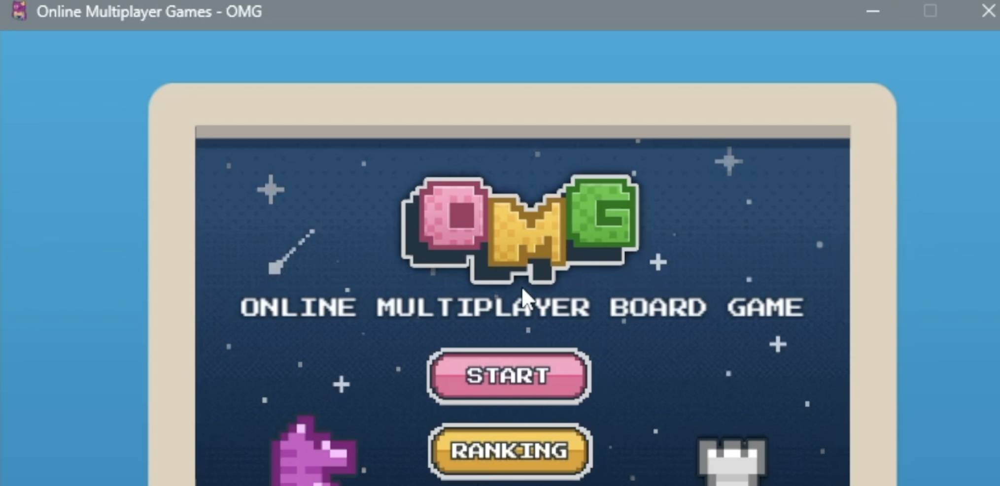

- Type
- Desktop multiplayer application
- My role
- Authentication, interface components, database
- Year
- 2025
- Stack
- JavaFX, MySQL, Docker
The problem
A game platform with accounts, profiles, and competitive matchmaking has to take security seriously, because stolen accounts are the whole economy. But every verification step is a place where a new player gives up. The question was how to be genuinely strict without feeling hostile on the way in.

What I built
- Multi-step authentication with email verification, CAPTCHA, and two-factor, wired to a real email service with hashed credential storage.
- Interface components for login, profile, settings, and matchmaking, covering both registered and guest players.
- Database operations for accounts and matchmaking, syncing in real time across Docker-hosted environments.
- 150+ automated unit and GUI tests to hold behaviour steady as the rest of the team changed things underneath.
The decision that mattered
Guest play. Letting someone into a match before asking them for anything means the verification steps arrive only once they have a reason to care about the account. Security that gates the thing you already want is tolerable; security that gates the thing you have not tried yet is just a wall.
Every verification step is a place someone gives up. The fix wasn't fewer steps. It was moving them after the fun.
What I took from it
Tests are a design tool. Writing 150+ interface cases forced me to name every state a screen could be in, including the ones I had been quietly ignoring: the half-filled form, the expired code, the match that never fills. Most had no interface at all until a failing test pointed at them.